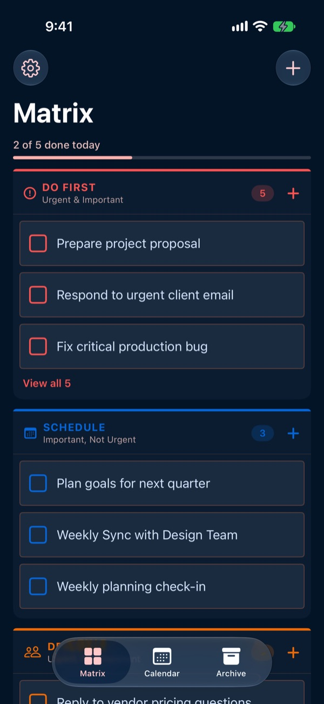
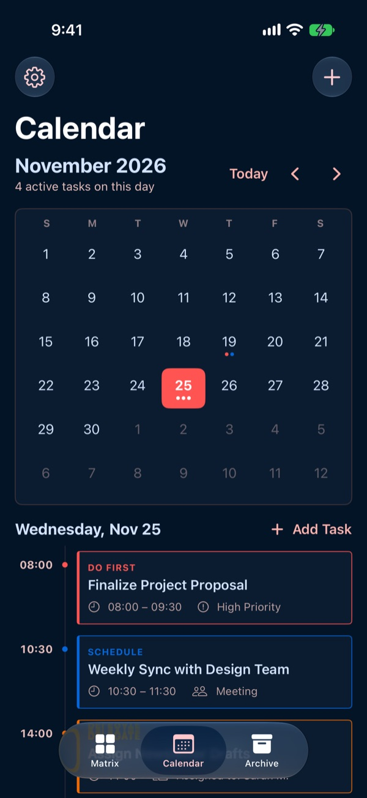
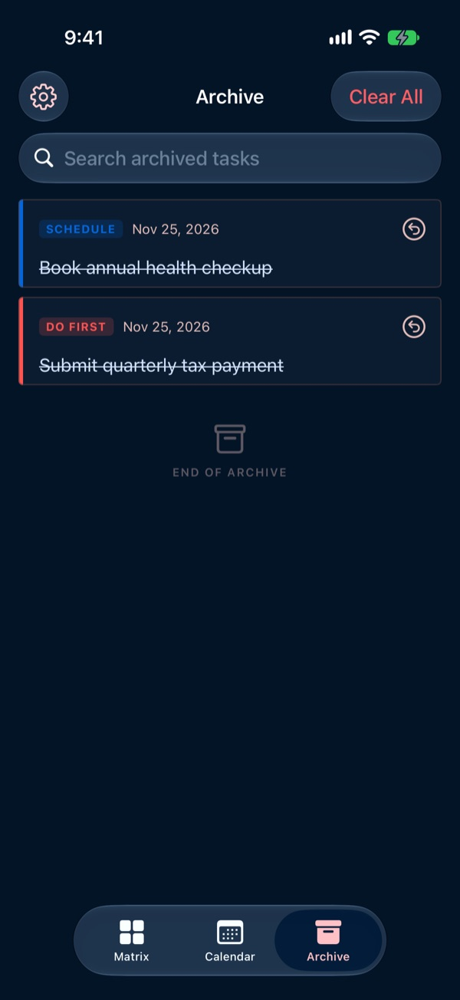
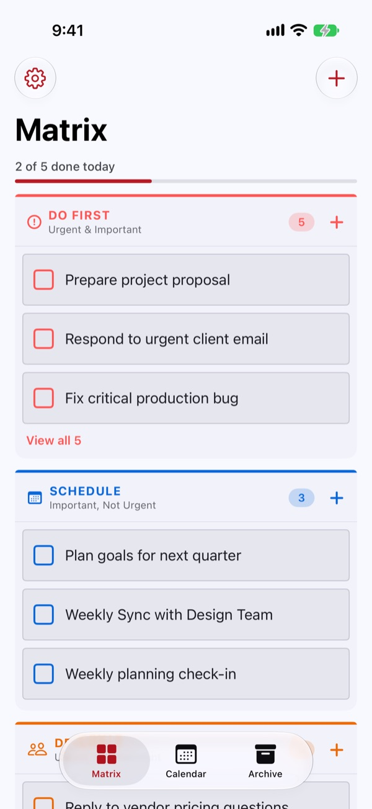
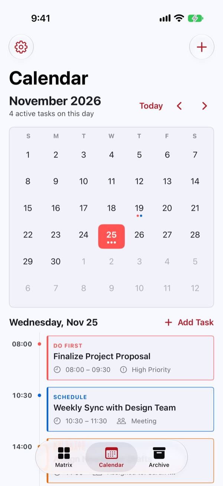
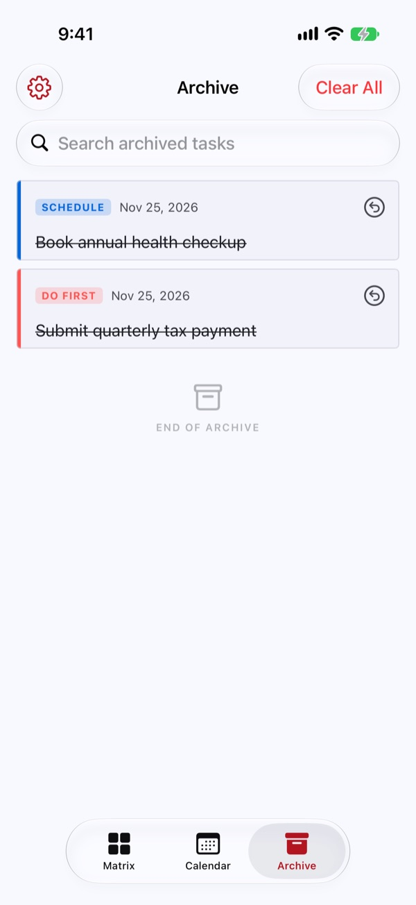
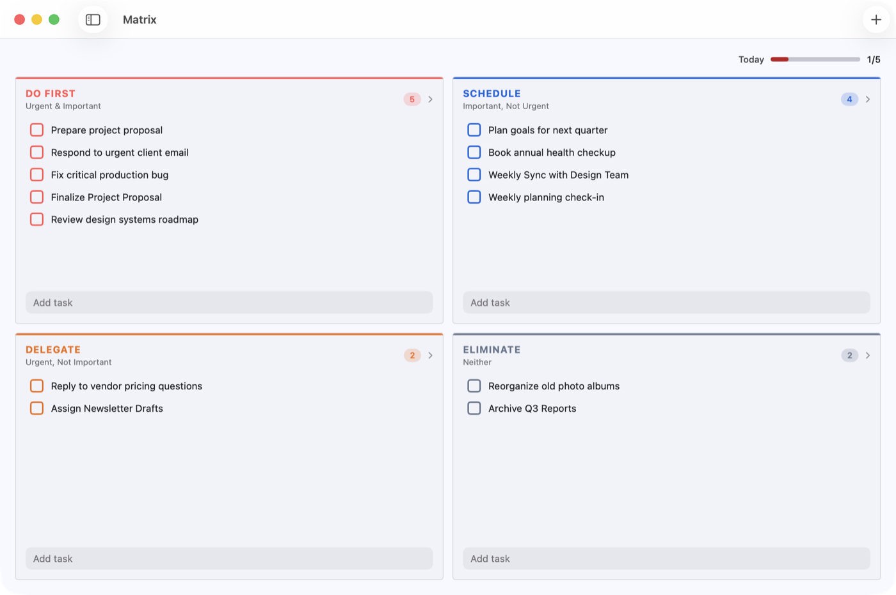

Sort what matters from what's just loud.
Matrix Focus is a to-do app built on the Eisenhower Matrix. Every task goes in one of four quadrants, so you always know what to do now, what to plan, what to hand off and what to drop.
Do firstUrgent and important
ScheduleImportant, not urgent
DelegateUrgent, not important
EliminateNeither
Dark mode



Light mode




Features
- Four-quadrant board with a daily completion goal
- Calendar view with scheduled times
- Archive of completed tasks, with search and restore
- Rename the quadrants to fit how you work
- Works fully offline; optional sync between Android, iPhone and Mac when you sign in (Apple, Google or email)